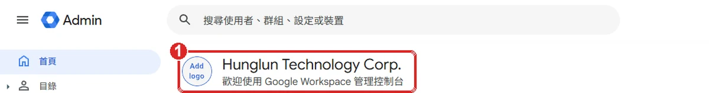
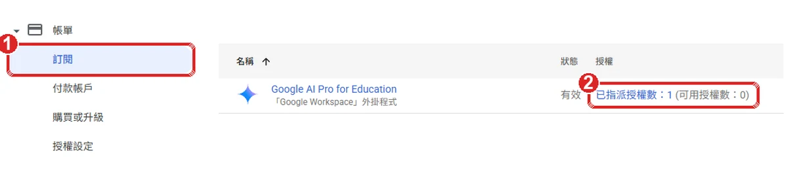
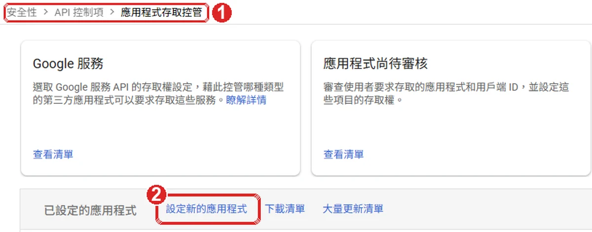
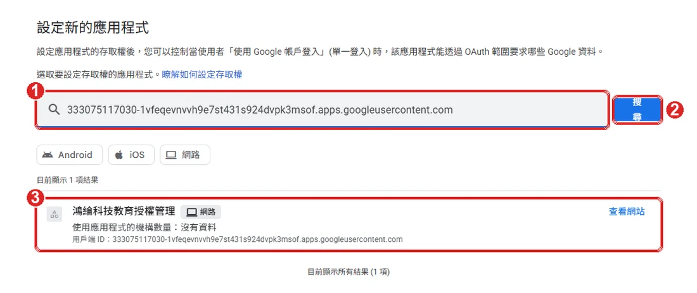
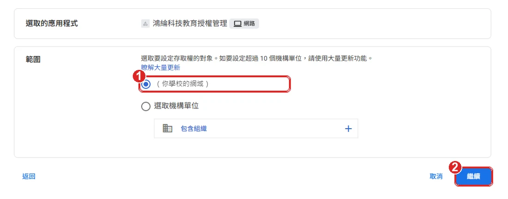
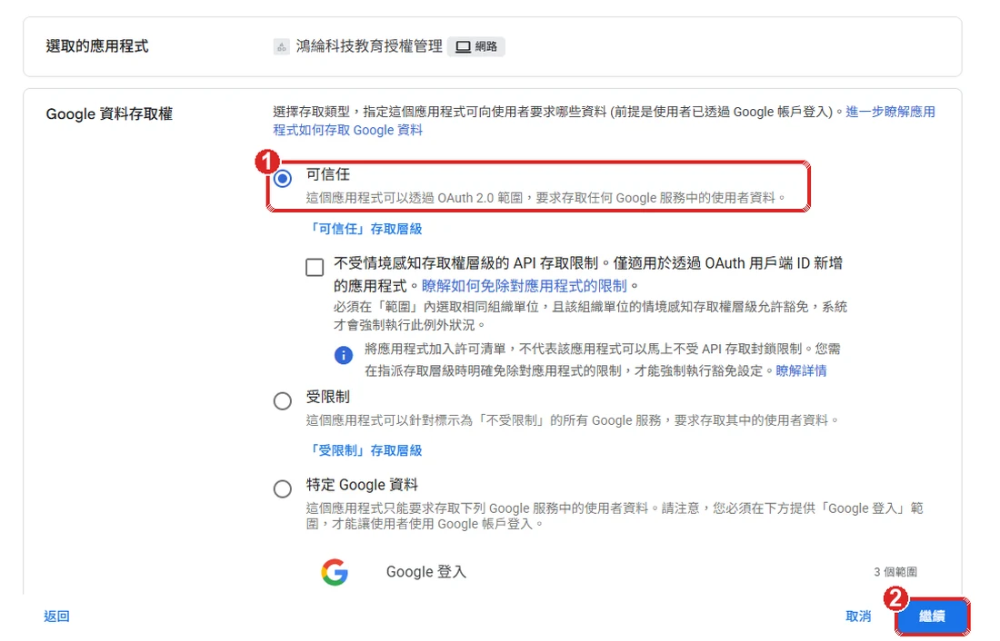
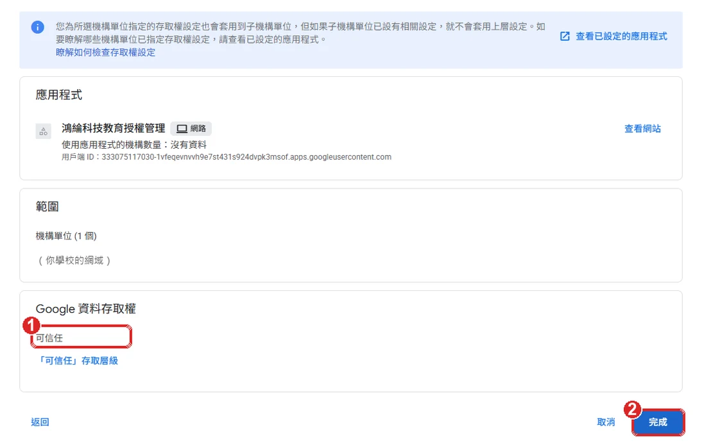

- 1 先設定
- 2 登入與選授權
- 3 填名單
- 4 預演確認
- 5 執行結果
步驟 1：先設定（第一次使用才需要）
做完下面五件事，再按最下面的按鈕往下走。以前做過、登入都順利的話，直接按「下一步」就好。
學校要先做的事
第一次使用前做一次，申請約 1 個工作天，其餘約 3 分鐘。用網頁版不需要 GCP，也不需要網域全域委派。
這個系統目前是「測試版」，只有鴻綸加入名單的 Google 信箱才能登入。沒加入的話，登入時會看到「存取權遭拒」。
- 到 鴻綸聯絡頁 留言，內容寫：學校名稱、你的姓名，以及你要用來登入的 Google 管理員信箱。
- 鴻綸確認後，會把你的信箱加入測試名單，並回覆你，通常 1 個工作天內完成。
- 收到回覆後，再做下面的步驟。
鴻綸管理者加入名單：打開 測試使用者設定頁（用 shen@gfeh.org 登入，左上角專案要顯示 littlelunkey），按「Add users」，貼上老師的信箱，按「儲存」，再回覆老師。
信箱要填你實際登入的那一個，打錯或換帳號登入都會被擋。一次最多開放 100 位，名單由鴻綸管理，你不用自己操作。
要能指派授權、讀取使用者清單，建議直接用超級管理員。

紅框 1 是你的組織名稱。登入後看到這個畫面，就表示登入成功。
管理控制台左側選「帳單 > 訂閱」，看要管理的授權還剩幾個，填在下面的欄位，額度不夠系統會擋下。

紅框 1 是左側「帳單 > 訂閱」。紅框 2 的「可用授權數」就是要填在下面欄位的數字。（已省略付款資訊）
登入視窗是 Google 自己的視窗。網址列若出現被擋的提示，選「一律允許」。
只有登入時被擋下、看到「應用程式遭封鎖」或「此應用程式遭到封鎖」，才需要做這一步，由學校的超級管理員操作。沒被擋就跳過。
- 打開 應用程式存取權控管（路徑：安全性 > API 控制項 > 應用程式存取權控管），按下方圖中紅框 2 的「設定新的應用程式」。
- 搜尋應用程式：貼上下面那串用戶端 ID（可按「複製用戶端 ID」），按「搜尋」，在結果點「鴻綸科技教育授權管理」。（第一張圖）
- 範圍：什麼都不用改，維持預設「你學校網域中的所有使用者」，按「繼續」。（第二張圖）
- Google 資料存取權：選第一個「可信任」，其他選項與核取方塊都不用勾，按「繼續」。（第三張圖）
- 檢閱：確認應用程式是「鴻綸科技教育授權管理」、存取權是「可信任」，按「完成」。（第四張圖）
- 回到登入頁，重新按「用 Google 管理員帳號登入」。
搜尋框下方的 Android、iOS、網路是類型篩選，不用選。若搜尋不到，請先用你自己的帳號登入一次（被擋也沒關係）再回來搜尋。

333075117030-1vfeqevnvvh9e7st431s924dvpk3msof.apps.googleusercontent.com
紅框 1 是這一頁的位置，紅框 2 是入口。下面四張圖是按下入口後的實際畫面（管理控制台實際畫面，已遮掉網域名稱）。這些畫面我們已實際走到「檢閱」，但還沒在別的學校按「完成」測試，若你看到的名稱不同，以畫面為準。

第一步 搜尋應用程式。紅框 1 貼上用戶端 ID，紅框 2 按「搜尋」，紅框 3 點搜尋到的「鴻綸科技教育授權管理」。

第二步 範圍。紅框 1 維持預設（網域中的所有使用者），紅框 2 按「繼續」。

第三步 Google 資料存取權。紅框 1 選「可信任」，紅框 2 按「繼續」。

第四步 檢閱。紅框 1 確認是「可信任」，紅框 2 按「完成」，這間學校就信任了。圖中學校網域已遮掉，你會看到自己學校的網域。
第一次登入會出現「Google 尚未驗證這個應用程式」，請按「進階」再按「前往（不安全）」繼續；若出現「存取權遭拒」，是因為你的信箱還沒被加入測試名單，請聯絡鴻綸申請。登入時 Google 只會問兩項權限：查看及管理網域的 Google Workspace 授權、查看網域使用者資訊（唯讀）。詳細說明請看上方「使用說明書」。